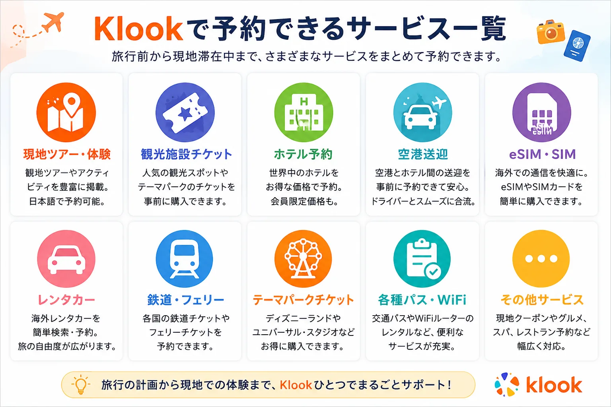
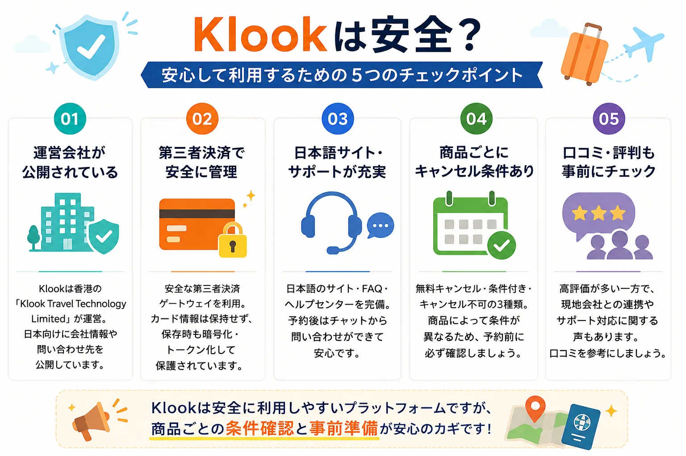
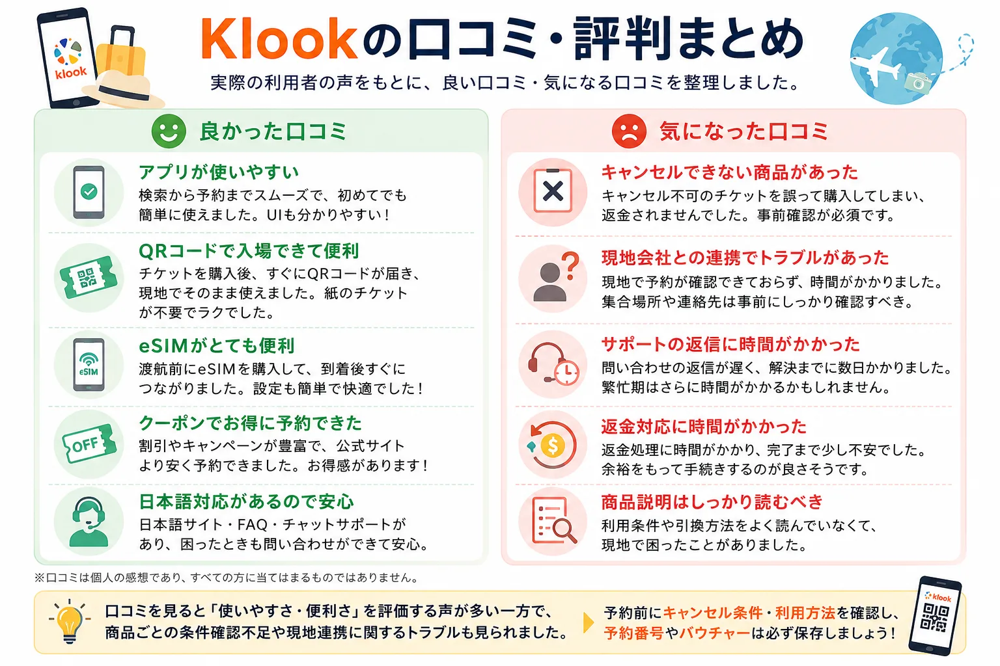
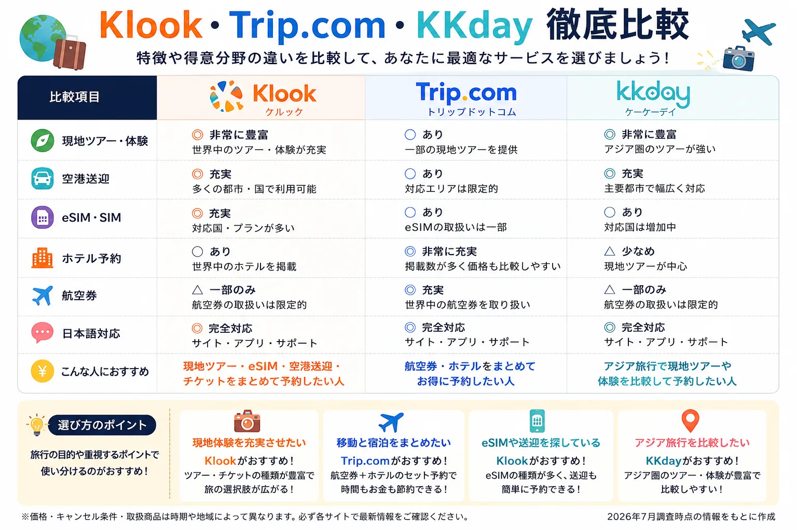
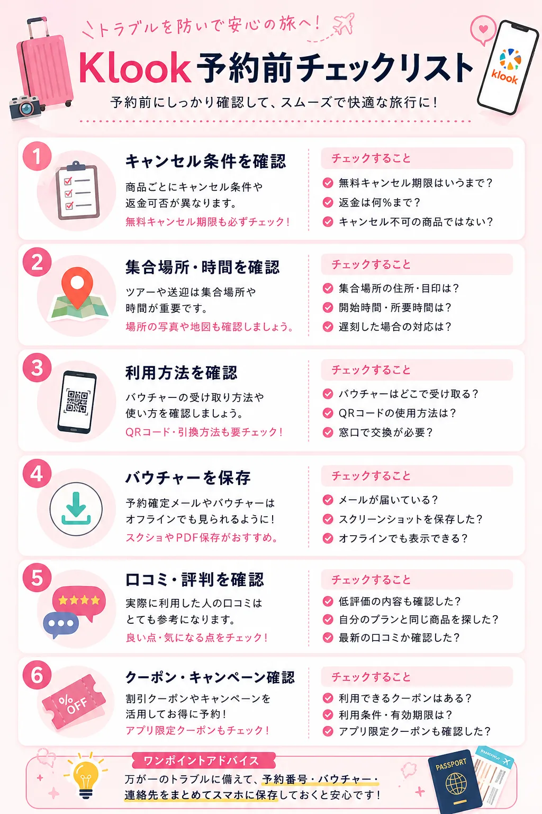

「Klookって本当に安全？」と不安な方へ
海外旅行のツアーや空港送迎、eSIMを探していると、よく目にする予約サイトがKlook（クルック）です。
しかし、「海外の会社だけど大丈夫？」「口コミは良い？」「キャンセルできる？」「Trip.comやKKdayと何が違う？」と不安に感じる方も多いでしょう。
結論から言うと、Klookは世界中で利用されている旅行・体験予約サービスであり、日本語サイトやヘルプセンターも用意されています。一方で、商品ごとにキャンセル条件や利用方法が異なるため、予約前に内容を確認することが重要です。
この記事では、公式情報や公開口コミをもとに、Klookの安全性やメリット・デメリットを中立的な立場で解説します。
この記事でわかること
- Klookとはどんなサービス？
- Klookは安全なの？
- 良い口コミ・悪い口コミ
- Trip.com・KKdayとの違い
- Klookがおすすめな人
- お得に利用する方法
Klookとは？
Klook（クルック）は、香港に本社を置くKlook Travel Technology Limitedが運営する旅行・体験予約プラットフォームです。日本語サイトやFAQ、ヘルプセンターも用意されており、日本円表示で予約できます。
旅行前から現地滞在中まで、さまざまなサービスを1つのアプリ・サイトで予約できるのが特徴です。
主なサービス
- 現地ツアー
- 観光施設チケット
- ホテル予約
- 空港送迎
- eSIM・SIM
- レンタカー
- 鉄道・フェリー
- テーマパークチケット
海外旅行で必要な予約をまとめて管理できるため、旅行初心者からリピーターまで幅広く利用されています。通信準備を先に整理したい方は、タイ旅行eSIMガイドやタイのデータローミング比較も参考になります。

Klookは安全？利用前に知っておきたい5つのポイント

初めてKlookを利用する方なら、「海外のサービスだから少し不安」と感じるかもしれません。
結論から言えば、運営会社や決済方法、日本語サポートなどの情報は公式サイトで公開されており、安心して利用しやすい環境が整っています。ただし、「すべての商品が同じ条件」というわけではありません。
1. 運営会社が明確に公開されている
Klookは香港に本社を置くKlook Travel Technology Limitedが運営しています。日本向けサイトでは、特定商取引法に基づく表示も公開されており、問い合わせ先やサポート窓口も確認できます。
海外企業だから危険というわけではなく、運営会社の情報が公開されていることは安心材料の一つです。
2. 決済情報は安全に管理されている
公式FAQによると、Klookでは安全な第三者決済ゲートウェイを利用しています。カード情報は取引中・取引後も保持せず、保存を選択した場合も決済会社側で暗号化・トークン化されると案内されています。
利用できる決済方法にはVisa、Mastercard、JCB、American Express、PayPay、Apple Pay、Google Payなどがありますが、商品や地域によって異なるため、予約画面で最終確認しましょう。
3. キャンセル条件は商品ごとに違う
Klookでは、無料キャンセル、条件付きキャンセル、キャンセル不可の商品があります。つまり、「Klookなら何でも無料キャンセルできる」というわけではありません。
特にeSIM、イベントチケット、日付指定商品などはキャンセル不可の商品もあるため、購入前に必ず確認しましょう。
4. 日本語サイト・ヘルプセンターが利用できる
Klookは日本語サイトだけでなく、日本語FAQ、ヘルプセンター、チャットサポート導線も用意されています。予約後は、予約詳細ページからチャットで問い合わせできます。
5. 商品によって品質は異なる
Klookは旅行会社というより、世界中の現地事業者の商品を掲載する予約プラットフォームです。ホテルやツアーを運営しているのは、それぞれ別会社になります。
そのため、ガイド、ツアー会社、空港送迎会社によってサービス品質が変わることがあります。
実際の口コミ・評判

ここからは、App Store、Google Play、Trustpilotなどに投稿された口コミをもとに、利用者の評価を見ていきます。なお、口コミは個人の体験であり、すべての利用者に当てはまるわけではありません。
良い口コミ
複数のレビューサイトで共通していた内容は、アプリの使いやすさ、QRコードで利用できる手軽さ、eSIMの便利さ、クーポンで安く予約できたという声です。
施設チケットや交通チケットは、スマホのQRコードだけで入場できるケースも多く、紙のチケットが不要という点が高く評価されています。
悪い口コミ
一方で、キャンセル条件を確認していなかった、現地会社との連携に時間がかかった、サポート対応や返金に時間がかかったという口コミもあります。
予約番号やバウチャーは必ず保存し、集合場所や利用方法を出発前に確認しておきましょう。
DIVERRA編集部コメント
実際の調査では、「予約のしやすさ」と「旅行準備を一つのアプリで完結できる点」を評価する声が多く見られました。一方で、低評価の多くは商品ごとの条件確認不足や、現地オペレーターとの連携に関するものでした。予約前にキャンセル条件や利用方法を確認し、予約番号・バウチャーを保存しておくだけでも、多くのトラブルは避けられます。
Klook・Trip.com・KKdayはどれがおすすめ？

旅行予約サイトは複数ありますが、それぞれ得意分野が異なります。「どれを使えばいいの？」と迷ったら、まずは予約したい内容で選ぶのがおすすめです。
| 比較項目 | Klook | Trip.com | KKday |
|---|---|---|---|
| 現地ツアー | ◎ | ○ | ◎ |
| 空港送迎 | ◎ | ○ | ◎ |
| eSIM | ◎ | ○ | ○ |
| ホテル | ○ | ◎ | △ |
| 航空券 | △ | ◎ | △ |
| 日本語対応 | ◎ | ◎ | ◎ |
| こんな人向け | 現地体験をまとめて予約したい | 航空券・ホテルを一括予約したい | 現地ツアーを比較したい |
価格やキャンセル条件は商品ごとに異なるため、予約前に各サイトで確認しましょう。Trip.comの使い勝手はTrip.com口コミ・評判、航空券とホテルの予約方法はセット予約と別々予約の比較記事で詳しく整理しています。
Klookがおすすめな人
初めて海外旅行へ行く人
日本語サイトで予約できるため、海外サイトに不安がある方でも利用しやすいでしょう。
現地ツアーをまとめて予約したい人
空港送迎、現地ツアー、eSIM、観光施設チケットなどを一つのサイトで予約できます。
クーポンを活用してお得に予約したい人
タイミングによっては、期間限定セール、クーポン、アプリ限定割引などが実施されています。
Klookを利用するときの注意点

どんな予約サイトにも共通しますが、予約前には以下を確認しましょう。
- キャンセル条件
- 集合場所
- 利用方法
- バウチャーの受け取り方法
- 口コミ
特にキャンセル条件は商品ごとに異なるため、「キャンセルできるだろう」と思い込まず、購入前に確認することが大切です。
よくある質問
Klookは安全ですか？
公式では第三者決済ゲートウェイを利用し、カード情報は保持しない仕組みを採用しています。ただし、予約体験は商品ごとの条件や現地事業者にも左右されるため、利用前に内容を確認しましょう。
Klookはキャンセルできますか？
商品によって異なります。無料キャンセルの商品もあれば、返金不可の商品もあります。
Klookは日本語対応していますか？
日本語サイト、FAQ、ヘルプセンターがあります。予約後はチャットから問い合わせできます。
Trip.comとどっちがおすすめ？
航空券・ホテル中心ならTrip.com。現地ツアー・空港送迎・eSIMならKlookがおすすめです。
まとめ
Klookは、現地ツアーや空港送迎、eSIM、観光施設チケットなどを一括で予約できる便利な旅行予約サービスです。
実際の口コミでは、アプリの使いやすさ、QRコードで利用できる手軽さ、eSIMや現地ツアーの充実といった点が高く評価されています。一方で、キャンセル条件や現地事業者との連携に関する口コミもあるため、予約前には商品ページをよく確認することが大切です。
DIVERRAとしては、現地ツアー・空港送迎・eSIMをまとめて予約したい旅行者には、Klookは十分検討する価値のあるサービスだと考えています。
DIVERRA編集部おすすめ
初めてKlookを利用する方は、予約前にキャンセル条件、利用方法・集合場所、最新クーポン・キャンペーンの3点だけ確認しておくと安心です。